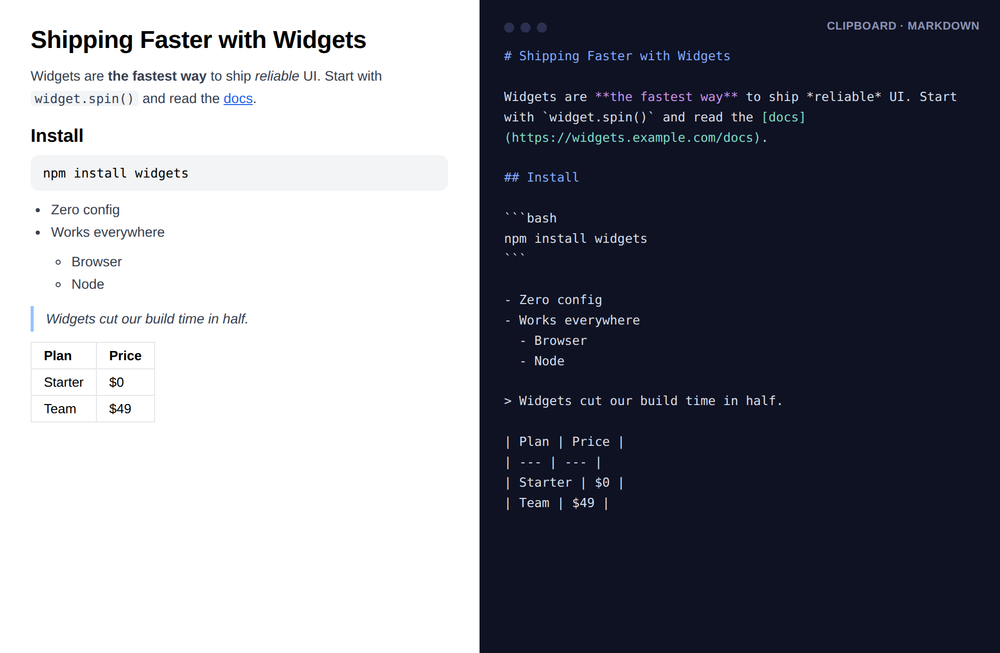

Select anything — headings, lists, links, code, tables — and copy it as tidy Markdown for Obsidian, Notion, GitHub, or your notes. Nothing leaves your browser.
Free forever for selection & link copying · Pro is $9 once — no subscription, ever

Every paste from the web into your notes app either loses structure or drags along broken HTML. CopyMark converts properly — the way you'd have written it by hand.
Alt+Shift+M or right-click. Headings, bold/italic, nested lists, quotes, task lists — all faithfully converted.
Code fences with language tags detected from the page (```bash, ```js), inline code preserved.
"Copy page as Markdown link" puts [Page title](url) on your clipboard — the fastest source citation.
HTML tables become real pipe tables with escaped cells, ready for GitHub and Obsidian.
Convert the whole article with your front-matter template — {{title}}, {{url}}, {{date}} — Obsidian preset included.
Copy every open tab as a Markdown link list. Research session, saved in one keystroke.
Your notes pipeline shouldn't have a monthly bill.
No. The conversion runs inside your browser, on your machine. CopyMark has no servers, no account system, and no analytics — your clippings exist only on your clipboard.
Only at the moment you invoke it there (Chrome's activeTab permission). It cannot read pages in the background or track your browsing.
Yes. $9 once, all Pro features forever, every future update included. Payments are processed by Stripe via ExtensionPay; we never see your card details.
Free converts tables to readable plain-text rows; Pro upgrades them to real GFM pipe tables with escaping. Everything else — headings, lists, code, quotes — is fully converted in Free.
Yes — the output is standard Markdown (GFM flavored). Pro adds a front-matter template with an Obsidian preset so full-page clips land with title, source URL, and date already filled in.
See how CopyMark compares — honestly, including when the other tool is the better fit.